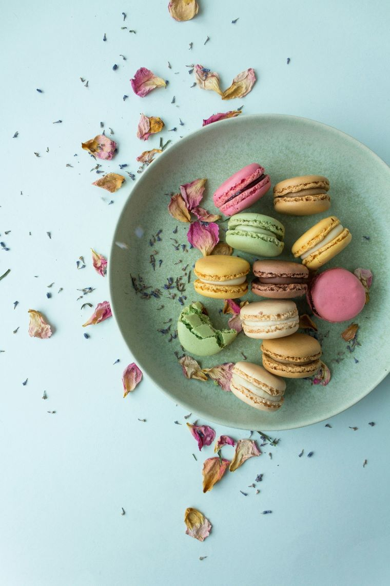

Macarons
Ingredients
- 1 1/3 (210g) powdered sugar
- 1 cup (95g) almond flour, finely ground
- 1 teaspoon salt
- 3 egg whites, at room temperature
- 1/4 cup (50g) granulated sugar
- 1/2 teaspoon vanilla extract
- 2 drops of different food coloring
Method
- 1. In the bowl of a food processor, combine powdered sugar, almond flour and 1/2 teaspoon of salt.
- 2. Process on low speed until extra fine.
- 3. Sift the almond flour mixture through a fine-mesh sieve into a large bowl.
- 4. In a seperate large bowl, beat the egg whites and add the remaining 1/2 teaspoon of salt with an electric hand mixer, until soft peaks form.
- 5. Add the vanilla extract and beat until incorporated.
- 6. Separate the dough in batches and add different food coloring in each batch. Beat until combined.

Caramel Fudge Cupcakes
Ingredients
- 1 cup cake flour
- 1 1/4 teaspoons baking powder
- 1/8 teaspoon salt
- 2 large eggs
- 3/4 cup castor or superfine sugar
- 1/2 cup full fat milk
- 2 teaspoons vanilla extract
- 1 1/2 teaspoons vegetable or canola oil
Method
- 1. Preheat oven to 180℃/350℉ for 20 minutes before starting the batter. Place the shelf in the middle of the oven.
- 2. Whisk flour, baking powder and salt in a large bowl. Set aside.
- 3. Place butter and milk in a heatproof jug and microwave for 2 minutes on high to melt butter.
- 4. Beat eggs for 30 seconds on speed 6 of a handheld beater.
- 5. With the beater still going, pour the sugar in over 30 seconds.
- 6. Pour hot milk, vanilla and oil into the flour mixture.

Blueberry Cheesecake
Ingredients
- 200g plain biscuits
- 120g or 8 tablespoons unsalted butter
- 500g cream cheese
- 2 tablespoon plain flour
- 1 1/2 cups castor or superfine sugar
- 1/2 cup sour cream
- 1 teaspoons vanilla extract
- Zest of 1 lemon
- 3 eggs, at room temperature
- 625g blueberries
Method
- 1. Preheat oven to 160℃/320℉. Place the shelf in the middle of the oven.
- 2. Blitz biscuits in a food processor until fine crumbs. Add butter, briefly blitz until dispersed and it resembles wet sand.
- 3. Pour into a cake tin. Use a spatula to roughly spread it out over the base and up to the walls.
- 4. Use a stand mixer to beat the cream cheese until smooth, no longer than 20 seconds on speed 4.
- 5. Add flour, vanilla extract, sour cream, sugar and lemon zest. Beat until just combined.
- 6. Add eggs one at a time. And stir in the blueberries with a silicone spatula.